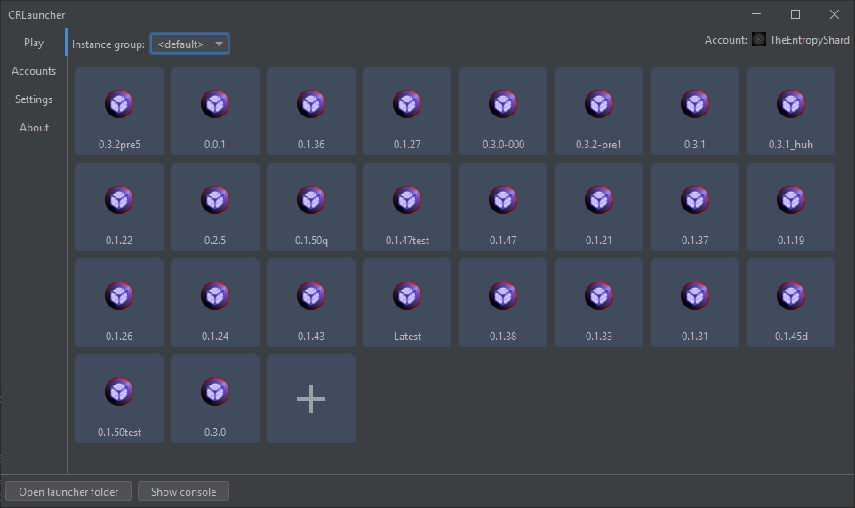
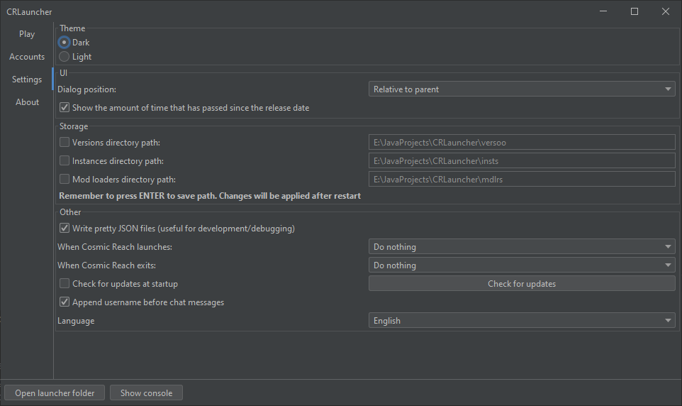

CRLauncher
:
A
simple
and
minimal
launcher for
Cosmic Reach
Download
Other files
Available for Windows, Linux and MacOS

Features:
Allows to download multiple versions of the game
Supports multiple instances: each installation of the game is independent
Supports multiple mod loaders: Fabric, Cosmic Quilt and Puzzle
Supports jarmods
Dark and light themes
Accounts
Auto-update
Supports downloading mods & stuff from
CRMM
*Settings page
